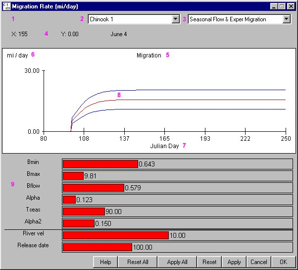

Equation Input Features

Equation Input window
Equation Input features and functions
Equation Input windows contain all or a combination of these features and functions.
- Location (1): Identifies the location (dam) to which the equation and parameter values apply.
- Species (2): Identifies the species to which the equation and parameter values apply.
- Equation (3): Identifies the active equation from a list of equations. The calibrated equation is the default selection.
- X, Y Coordinates (4): Displays X, Y Coordinates which actively update as the pointer moves over graph.
- Graph Title (5): Displays the Equation Input window title in the graph for printing purposes.
- Y-axis Label (6): Identifies the unit of measurement for the Y-axis. This is the dependent variable in the equation.
- X-axis Label (7): Identifies the unit of measurement for the X-axis. This is the independent variable in the equation.
- Equation Curves (8): Displays curve representing the active equation. If there are three curves, the red line is the average value and the blue lines are the minimum and maximum values.
- Parameter Sliders (9): Displays the parameter values for the active equation selected in the Equation menu. Modify the equation parameters with sliders (see Edit Single Slider Value).
- Horizontal Black Line: Indicates that the parameter sliders above the line actually influence the running model, whereas parameters below the line are only included for visual effect only while editing. If there is no line, that means that all parameters shown influence the running model.
- Increase vertical graph scale by right-clicking in the upper-half of the graph.
- Decrease vertical graph scale by right-clicking in the lower-half of the graph.
- Help: Opens context-sensitive help information.
- Reset All, Apply All, Reset, Apply, Cancel, OK.